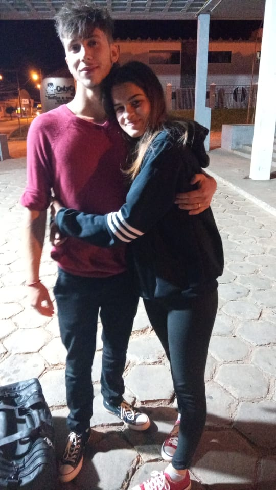

Nossa história
Daniel Laroca ArrivabeneEm uma noite quente de 2019 eu senti algo dentro de mim, uma força do destino, e uma vontade de jogar algum jogo simples e besta. Eu entrei no Among Us, vc entrou no Among Us, dois completos estranhos, duas pessoas com muros altos pra não deixar ninguém se aproximar até o íntimo dos sentimentos, duas pessoas que ja se machucaram, dois fãs de Guns n' Roses.
Quando eu criei aquela sala, mesmo sem saber eu estava alterando nossas vidas, a cada letra que eu digitei, naquele ano/mês/dia/minuto/milésimo de segundo, eu estava construindo a abertura de um novo universo...um universo maior do que jamais sonhamos.
Vc entrou na sala, e eu senti algo que eu nunca havia sentido antes, algo que me arrepiou mesmo sem saber quem e oq vc era Slash, naquele dia tudo podia dar errado, e nossa vida não seria uma, seriam duas, como antes de 2019, eu estava em casa, a internet podia ter caido, o servidor podia ter dado erro, seu celular podia ter morrido, nada disso aconteceu, o destino estava do nosso lado, sempre está, a cada oportunidade criada na marra, a cada provação, Eu te Amo Mais Garota.
Nós trocamos contatos, e a partir daquele momento nossa relação virou uma Montanha Russa: momentos bons e ruins, medos, entregas, raivas, alegrias, ciúmes, a cada dia entrando mais fundo no íntimo um do outro, camada por camada, vc me fez desejar por fora de vc, e me fascinou pela sua essência, assim como eu te cativei e te mostrei um diamante raro de valor inestimável, o Amor.
Inevitável Baby, nasceu contra tudo e contra todos, cada dia mais forte, nossas palavras se tornaram o ar um do outro, nossas almas se fundiram até o momento em que a unica coisa que preenche meus pensamentos é Você, e a única coisa que preenche os seus sou Eu. não dava mais, mesmo com a distância, ficar mais um dia sem algo mais solido que oq tinhamos era ináceitavel.
Começamos a namorar, nossa Montanha Russa foi mudando com o tempo, as subidas cada vez mais altas, as decidas cada vez menos fundas, com o tempo as emoções não eram mais ciúmes e felicidade, e sim saudades e Amor. Eu sei exatamente onde eu estava com a cabeça quando comprei aquela passagem, estava em Você.
Mesmo que eu fique o século inteiro escrevendo eu não vou ter dito 0,0001% sobre os nossos dias juntos, milhões de palavras não são suficientes, por isso eu resumo tudo em uma imagem e em uma palavra: Perfeito.
Isabele Laroca Arrivabene Eu me apaixonei por vc quando vc ainda era aquela garotinha, e agora eu tenho muito orgulho de te chamar de Minha Mulher
-I am coming back Baby-
Nosso primeiro encontro

Nosso primeiro encontro versão 2.0
Nosso objetivo
Uma casa no campo com um lago, um cachorro, Glicínias brancas por todo o terreno, uma adega, viagens, um quarto secreto, incenso, tudo oq quisermos sem esquecer o principal: Estarmos juntos, Só Eu e Vc pra sempre.